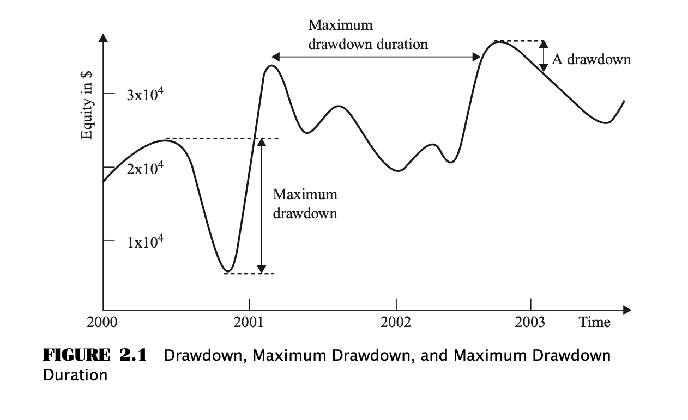

手动拆解《Quantitative Trading - How to Build Your Own Algorithmic Trading Business》（二）
- Author: Damon Yuan
- Date: 2020-09-28
- 微信公众号: 手动拆解《Quantitative Trading - How to Build Your Own Algorithmic Trading Business》（二）
本章的内容如下，主要就是告诉大家，找到可行的交易策略并不是一件困难的事情，我们的主要工作是鉴定找到的策略是不是适合我们的所处的环境，最后介绍了一些鉴定指标，就酱紫。
第一部分主要讲，找到可行的策略的途径很多，源头主要分为下面几类：
- 学术 Academic
- 财经网站和博客 Financial web sites and blogs
- 交易员论坛 Trader forums
- 报纸杂志 Newspaper and magazines
这里顺便提一句，这本书确实有些年头了，肯定缺失了不少最新的信息源头，比如 quantopian，欢迎大家留言补充。
总之第一部分想说的量化的难点不是没有 ideas, 难点是培养能发掘适合自己的可盈利的 ideas 的眼光。
第二部分主要讲判断是不是适合自己的几个要素，
投入时间
兼职的话那可能就不要看日内交易的策略了，国内二级市场 A 股 T+1 也不允许。普通的基本上能有在开市前和闭市前下单的时间就够了。当然程序的自动化可以解放大家的双手，也会是大伙儿想做量化的一大原因吧。
代码能力
普通的话 Python 走起就够了, 但是这本书使用的 MatLab 和 Excel 说明了它是石器时代出版的书…… 高端的 C, C++ 做高频交易策略就不在讨论范围了，我也不会。
交易资金
划重点，重要。
一是佣金。虽然现在佣金已经下降到很低了，但是始终还是影响是否盈利的一大因素。
二是杠杠。交易期货，货币，期权一般有比股票更高的杠杠，但是天台见的概率也是更高的，而且杠杠率在一些市场还和交易类型是日内还是日外有关（不知道不明白不了解，纯粹翻译，请自行谷歌）。
最后交易资金的大小也会影响交易类型：单边交易或是对冲交易。太少资金做对冲及时降低了风险，也降低了收益。
另外一些影响譬如交易数据实时性（高大上高频交易专属，民工专区，高端勿扰），准确性（这里注意数据中的幸存者偏差，复权等问题，这些会导致回测不准确），在我们这个时代已经不是问题了。且不说免费的 Tushare, 即便是专业软件万德，在某宝上也是分分钟几十元搞定的事情。
盈利目标
本书作者认为，你越想稳定有规律的通过策略产生盈利，你越应该尽可能地提高交易频率（这里价值投资者们可能要掀桌子了）。这里作者提到了夏普率，并且认为从数学角度，在有能力获得足够高杠杠的前提下，最大的长期盈利的充分条件是发现有最高夏普率的策略。
(TODO: tax considerations and the limitation on your margin borrowing - chapter 6+)
第三部分其实就是讲选择策略的两个指标：夏普率和最大回撤。
夏普率 Sharp Ratio
\[ Information Ratio = \frac{Average of Excess Returns}{Standard Deviation of Excess Returns} \]
where
\[ Excess Returns = Portfolio Returns − Benchmark Returns \]
夏普率其实是以上公式当 Benchmark Returns 为无风险利率时的情况，也就是策略必须是货币中立的 / 风险有对冲的（我也不知道怎么翻译 ╮(╯▽╰)╭ ）。
具体定义和理解不做太多累赘的复述，请自行度娘。backtrader 已经实现了该类，可以直接拿来用或者借鉴理解（这里）。
注意，
- 如果一个策略一年只交易不多几次，那么它的夏普率不会太高，但是并不是说这个策略不能盈利。
- 如果一个策略有很长时间或者很大程度的回撤（backtrader 也已经实现 这里），那么它的夏普率也不太可能太高。
- 如果夏普率小于1，那你基本上可以放弃该策略。如果你想要每个月都有盈利，那么该策略的夏普率应该至少为2。如果一个策略能够做到每天都盈利，那么它的夏普率应该至少为3。
最大回撤
这里有两个概念，最大回撤时间和最大回撤程度。

这一章节的重点内容就在这里，我们下节再见惹。